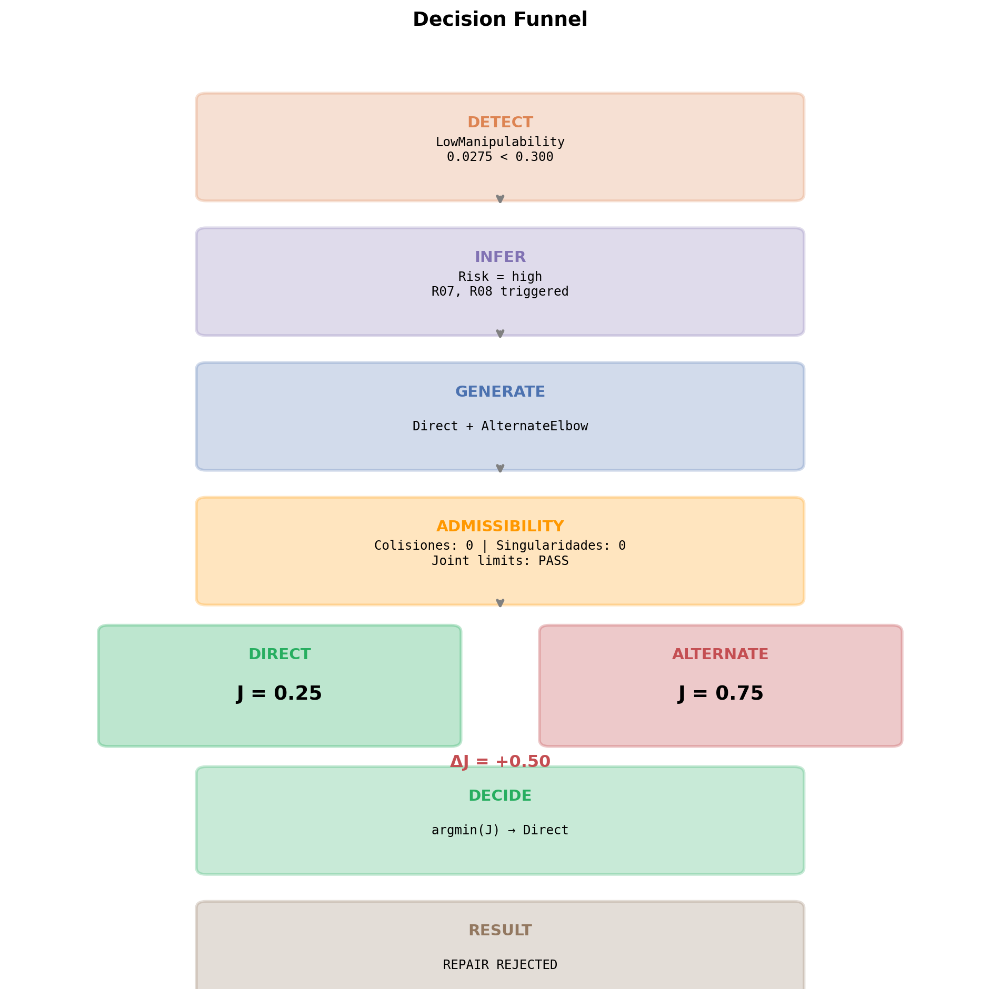
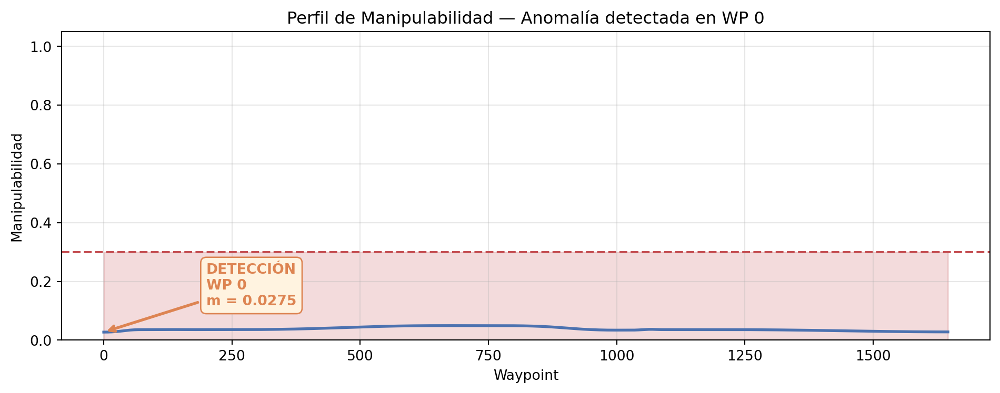
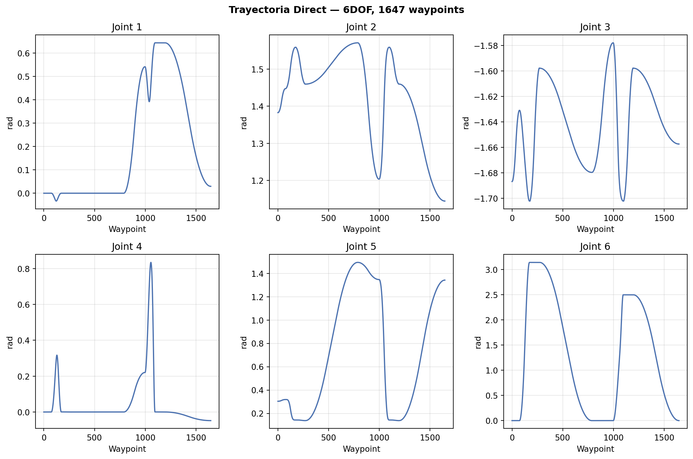
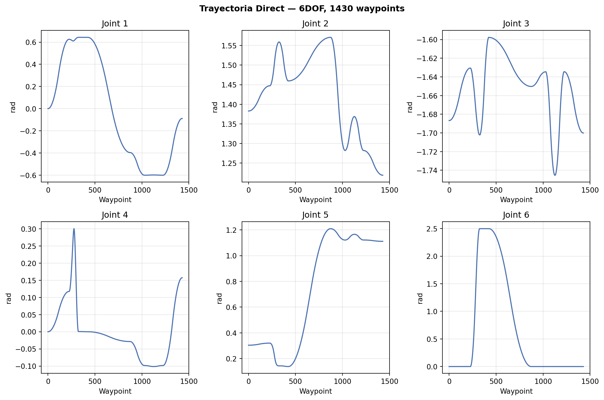
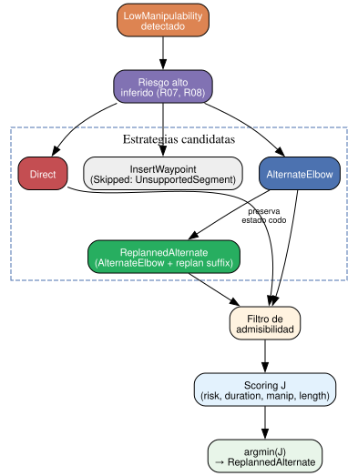

Thalos Intelligence
Evidencia Experimental de Toma de Decisiones
Thalos Intelligence
Evidencia Experimental de Toma de Decisiones
LOW MANIPULABILITY DETECTED
↓
ALTERNATIVE GENERATED
↓
CANDIDATE BATTLE
DIRECT
J = 1.00
REJECTED
ALTERNATE
J = 0.10
SUPERSEDED
REPLANNED
J ≈ 0
SELECTED
ΔJ = −1.00 | ReplannedAlternate wins 3-candidate ranking
3
Candidatos (H6)
27/27
Checks PASS
5/5 + H6
Hipótesis base + H6 scoped
3
Decisiones consistentes
H6 PASS
3-candidate pipeline
Alcance experimental: Esta validación cubre la rama de rechazo de reparación (Direct > AlternateElbow) y la rama de aceptación de reparación demostrada por H6 (ReplannedAlternate selected, J ≈ 0). Los resultados corresponden a los escenarios 6dof-near-singular y 6dof-elbow-swap; no constituyen una prueba de optimalidad general.
1 Qué fue probado
| Escenario | Tarea | Robot | Waypoints |
|---|---|---|---|
| 6dof-near-singular | Alcanzar borde del workspace | 6DOF | 1647 |
| 6dof-elbow-swap | Carry cruzando el cuerpo | 6DOF | 1430 |
1.1 Hipótesis
| ID | Hipótesis | Resultado |
|---|---|---|
| H1 | Intelligence detectará la condición de baja manipulabilidad | PASS |
| H2 | Intelligence generará una alternativa candidata que supere los filtros de admisibilidad | PASS |
| H3 | Las alternativas serán evaluadas mediante J |
PASS |
| H4 | El candidato seleccionado corresponderá al menor J |
PASS |
| H5 | La ejecución corresponderá al candidato seleccionado | PASS |
| H6 | ReplannedAlternate preserva semantic targets y es evaluable en el mismo pipeline de 3 candidatos | PASS |
1.2 Notas Metodológicas
Normalización de J. El costo J se computa mediante normalización min-max relativa al conjunto de candidatos evaluados en cada ejecución. J ≈ 0 corresponde al valor más bajo del conjunto, no a una perfección física absoluta. Un J bajo no implica que la trayectoria sea óptima en términos absolutos, sino que presenta el costo normalizado más bajo entre los candidatos competidores evaluados bajo los mismos criterios de scoring.
Invariante experimental. Todos los escenarios comparten: solver IK, planner, restricciones cinemáticas, puerta de admisibilidad, análisis de trayectoria, método de scoring y objetivo cartesiano final. La única variable que cambia entre candidatos es la semilla articular y, en el caso de H6, la resolución del sufijo del plan desde esa nueva semilla.
Variación de J entre conjuntos. Cuando el conjunto de candidatos pasa de 2 a 3, los valores de J de los candidatos originales pueden cambiar. Esto ocurre porque la normalización min-max depende del rango del conjunto completo: al añadir un tercer candidato, los mínimos y máximos de cada componente se reevalúan, reasignando los valores normalizados. Por eso Direct puede pasar de J = 0.25 con 2 candidatos a J ≈ 1.0 con 3 candidatos sin que su trayectoria haya cambiado.
2 Arquitectura de Decisión
2.1 Filtro de Admisibilidad y Scoring
La decisión ocurre en dos fases. Primero se verifica que cada candidato sea físicamente admisible. Solo los candidatos que superan este filtro participan en el scoring multiobjetivo.
01 · ADMISIBILIDAD
¿Puede ejecutarse?
Colisiones · Singularidades · Joint limits · Restricciones físicas
→
02 · SCORING
¿Cuál conviene más?
Riesgo · Duración · Manipulabilidad · Longitud
→
03 · DECISIÓN
argmin(J)
Direct → seleccionado
El filtro de admisibilidad determina qué puede ejecutarse. El scoring determina qué conviene ejecutar.
2.2 Decision Funnel
3 Experimento 1: 6dof-near-singular
3.1 Detección
LowManipulability detectado en WP 0
Valor: 0.0275 | Umbral: 0.300 | 90.8% bajo umbral3.2 Manipulabilidad

3.3 Evaluación Completa
Fase 1: Admisibilidad
| Criterio | Resultado |
|---|---|
| Colisiones | int(metrics1.get('has_collisions', 0)) |
| Singularidades | int(metrics1.get('singular_count', 0)) |
| Near-singularidades | int(metrics1.get('near_singular_count', 0)) |
| Estado | PASS — ambos candidatos admisibles |
Fase 2: Scoring
| Componente | Peso | Direct | AlternateElbow | $\Delta$ |
|:---|---:|---:|---:|---:|
| Riesgo | 0.5 | 0.6250 | 0.6250 | +0.0000 |
| Duración (s) | 0.2 | 16.3562 | 20.9793 | +4.6231 |
| Manipulabilidad | 0.2 | 0.0382 | 0.0348 | -0.0034 |
| Longitud (m) | 0.1 | 13.9347 | 19.9636 | +6.0289 |
|:---|---:|---:|---:|---:|
| **J** | **1.0** | **0.2500** | **0.7500** | **+0.5000** |Decisión: Direct seleccionado (menor \(J\)). AlternateElbow rechazado — todos los componentes diferenciales del scoring favorecen a Direct.
3.4 Composición de J
Cómo se computa J:
J(c) = 0.5·r̂ + 0.2·d̂ + 0.2·(1-m̂) + 0.1·l̂
donde r̂, d̂, m̂, l̂ son valores normalizados [0,1] con deadband (ε=10⁻⁴)
Con 2 candidatos, la normalización min-max hace que:
• El mejor valor de cada componente reciba 0
• El peor reciba 1
• Si ambos son idénticos (range < ε), ambos reciben 0.5
Risk: ambos = 0.625 → range=0 < ε → deadband → ambos = 0.5
→ contribución = 0.5 × 0.5 = 0.25 para ambos
Duration: Direct=16.4 (min→0), Alternate=21.0 (max→1)
→ Direct: 0.2 × 0.0 = 0.00 | Alternate: 0.2 × 1.0 = 0.20
Manipulability: Direct=0.038 (max→1), Alternate=0.035 (min→0)
→ Direct: 0.2 × (1-1) = 0.00 | Alternate: 0.2 × (1-0) = 0.20
Length: Direct=13.9 (min→0), Alternate=20.0 (max→1)
→ Direct: 0.1 × 0.0 = 0.00 | Alternate: 0.1 × 1.0 = 0.10
J_Direct = 0.25 + 0.00 + 0.00 + 0.00 = 0.25
J_Alternate = 0.25 + 0.20 + 0.20 + 0.10 = 0.753.5 Trayectoria

4 Experimento 2: 6dof-elbow-swap
4.1 Detección
LowManipulability detectado en WP 0
Valor: 0.0275 | Umbral: 0.300 | 90.8% bajo umbral4.2 Evaluación Completa
Fase 1: Admisibilidad
| Criterio | Resultado |
|---|---|
| Colisiones | int(metrics2.get('has_collisions', 0)) |
| Singularidades | int(metrics2.get('singular_count', 0)) |
| Near-singularidades | int(metrics2.get('near_singular_count', 0)) |
| Estado | PASS — ambos candidatos admisibles |
Fase 2: Scoring
| Componente | Peso | Direct | AlternateElbow | $\Delta$ |
|:---|---:|---:|---:|---:|
| Riesgo | 0.5 | 0.6250 | 0.6250 | -0.0000 |
| Duración (s) | 0.2 | 14.1967 | 17.8365 | +3.6398 |
| Manipulabilidad | 0.2 | 0.0381 | 0.0356 | -0.0026 |
| Longitud (m) | 0.1 | 7.5147 | 13.1597 | +5.6450 |
|:---|---:|---:|---:|---:|
| **J** | **1.0** | **0.2500** | **0.7500** | **+0.5000** |Decisión: Direct seleccionado (mismo patrón que Escenario 1).
4.3 Trayectoria

5 Experimento H6: Three-Candidate Ranking (ReplannedAlternate)
5.1 Contexto
H6 valida el comportamiento de la estrategia ReplannedAlternate en la pipeline de tres candidatos. Esta estrategia preserva el estado articular del codo de AlternateElbow y resuelve el sufijo semántico del plan desde esa nueva condición, generando un tercer candidato. La pipeline procesa los tres candidatos mediante la misma secuencia: compilación, análisis de trayectoria, evaluación, filtro de admisibilidad y scoring con \(J\).
5.2 Strategy Trace
| # | Strategy | Outcome |
|---|
| 0 | Direct | Generated |
| 1 | InsertWaypoint | Skipped — UnsupportedSegment |
| 2 | AlternateElbow | Generated |
| 3 | ReplannedAlternate | Generated |5.3 Candidate Ranking
| # | Estrategia | Riesgo | Duración (s) | Manipulabilidad | Longitud (m) | J |
|:---:|:---|---:|---:|---:|---:|---:|
| 0 | ReplannedAlternate ← | 0.1625 | 2.9256 | 0.631488 | 2.1398 | 0.00000001 |
| 1 | AlternateElbow | 0.1625 | 5.2556 | 0.631396 | 2.1398 | 0.09538557 |
| 2 | Direct | 0.5571 | 7.8179 | 0.458454 | 3.8850 | 1.00000000 |
|:---:|:---|---:|---:|---:|---:|---:|
**Seleccionado:** ReplannedAlternate
J_selected = 0.00000001 J_Direct = 1.0000
ΔJ = +1.0000 — diferencia normalizada entre ReplannedAlternate y Direct en el conjunto evaluado.5.4 Diagrama de la Ruta Arquitectónica H6

5.5 Key Finding
En el escenario 6dof-elbow-swap, ReplannedAlternate obtiene el menor J del conjunto de 3 candidatos (\(J \approx 0\)). Preserva los semantic targets Cartesianos del programa original y replanifica el sufijo desde el estado del AlternateElbow, produciendo una trayectoria de duración y riesgo menores que Direct y AlternateElbow, con mayor manipulabilidad y longitud equivalente a AlternateElbow. Esto confirma H6 en este escenario: el tercer candidato es real y evaluable mediante la misma pipeline; en este caso, resultó seleccionado por obtener el menor costo normalizado.
6 Resultado Cross-Escenario
| Métrica | near-singular | elbow-swap |
|:---|---:|---:|
| Waypoints | 1647 | 1430 |
| Risk | high | high |
| J_Direct | 0.2500 | 0.2500 |
| J_Alternate | 0.7500 | 0.7500 |
| ΔJ | +0.50 | +0.50 |
| Seleccionado | Direct | Direct |Nota de alcance: Los resultados anteriores corresponden a los escenarios evaluados (
6dof-near-singulary6dof-elbow-swap). No constituyen una demostración de optimalidad general de la estrategia Direct sobre AlternateElbow; reflejan el comportamiento observado bajo las condiciones específicas de cada experimento.
7 Verificación de Hipótesis
| Hipótesis | Escenario 1 | Escenario 2 | H6 |
|---|---|---|---|
| H1: Detección | PASS | PASS | — |
| H2: Generación admisible | PASS | PASS | — |
| H3: Evaluación | PASS | PASS | PASS |
| H4: Selección | PASS | PASS | PASS |
| H5: Ejecución | PASS | PASS | — |
| H6: Tres candidatos evaluable | — | — | PASS |
8 Alcance
Demostrado
✓ Detectar condición de riesgo ✓ Inferir necesidad de evaluación ✓ Generar candidato alternativo ✓ Validar candidato según filtros disponibles ✓ Calcular costo multiobjetivo ✓ Seleccionar menor costo ✓ Rechazar reparación peor ✓ H6: Evaluar 3 candidatos en pipeline unificado ✓ H6: ReplannedAlternate preserva semantic targets ✓ H6: Observación de reparación favorable en 6dof-elbow-swap
Pendiente
○ Medir Δq directamente ○ Verificar error cartesiano mediante FK independiente ○ Generalizar a más robots
9 Conclusión
RESULTADO EXPERIMENTAL
27/27 PASS | 5/5 BASE + H6 SCOPED
H1–H5: Direct seleccionado sobre 2 candidatos | H6: ReplannedAlternate seleccionado sobre 3 candidatos en 6dof-elbow-swap
REPARACIÓN RECHAZADA (H1–H5) → REPARACIÓN FAVORABLE OBSERVADA EN H6
Un candidato debe superar primero las restricciones de admisibilidad para entrar en la competencia. Entre los candidatos admisibles, la selección se realiza mediante el costo multiobjetivo J.
En los escenarios H1–H5 (2 candidatos), AlternateElbow fue rechazado porque su J superaba al de Direct. En el experimento H6 sobre 6dof-elbow-swap (3 candidatos), ReplannedAlternate fue seleccionado porque preserva los semantic targets y replanifica el sufijo desde el estado del AlternateElbow, produciendo una trayectoria de duración y riesgo menores que Direct y AlternateElbow, con mayor manipulabilidad y longitud equivalente a AlternateElbow, bajo el mismo mecanismo de scoring.
El filtro de admisibilidad determina qué puede ejecutarse. El scoring determina qué conviene ejecutar. En 6dof-elbow-swap, H6 confirma que la pipeline puede evaluar 3 candidatos de forma unificada y seleccionar una reparación favorable cuando existe.
10 Reproducibilidad
# Generate H6 experiment artifact (env-gated, normal runs unaffected)
THALOS_H6_EXPERIMENT=1 cargo test -p thalos_runtime --lib -- analyze_plan_with_candidates_populates_candidate_ranking
# Run validation and render report
bash validation/run-validation.sh
quarto render validation/intelligence-report.qmd --to html